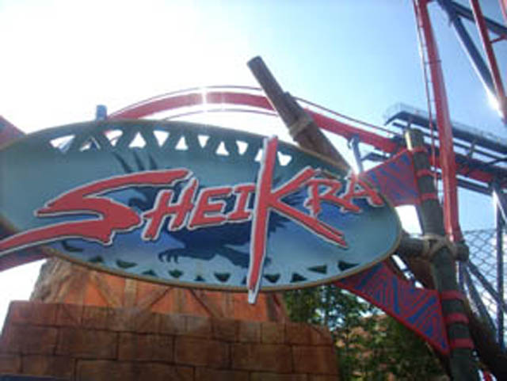
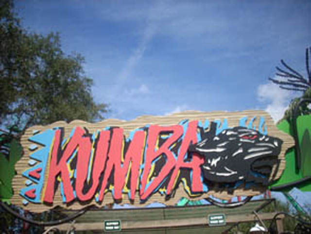
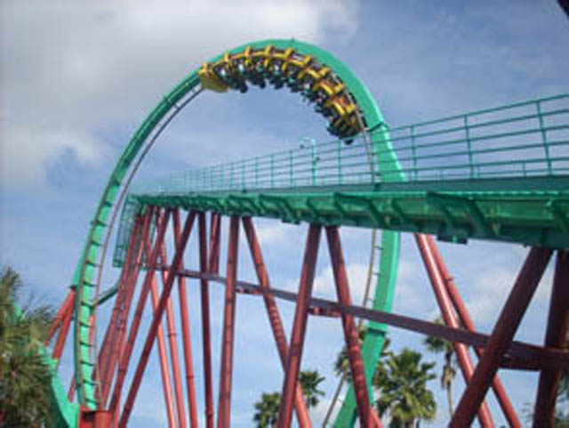
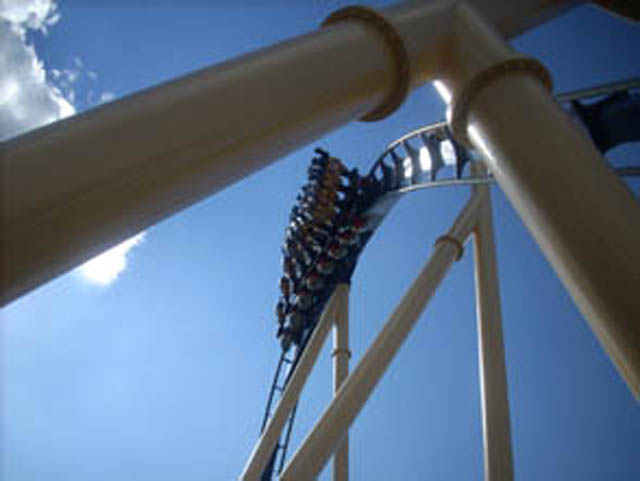
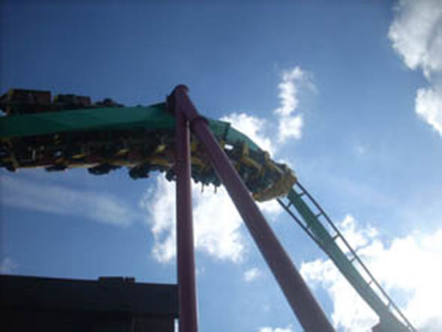

Thanksgiving in Florida!!!
Busch Gardens AfricaUniversal Orlando Resort Disney World Resort
Here is our Florida Update!!! The other big trip this year. With lots of stupidity and kickass B&Ms.
When your plane lands, you take the shuttle.
 And the shuttle takes you to this kickass airport.
And the shuttle takes you to this kickass airport.
 But thats enough about cool airports. Lets get down to buisness!
But thats enough about cool airports. Lets get down to buisness!
 Lets just get this over with as quick as possible.
Lets just get this over with as quick as possible.

Now that we got Gwazi out of the way, lets get to the good stuff.
Any drop thats 90 degrees is automatically screamingly awsome!!!!
 Reach for the sky!! Too bad you won't be able to rule it.
Reach for the sky!! Too bad you won't be able to rule it.
And into the dark and dank hole we go!!!
 Next Goal for Cody, Soak himself from Shiekras Watersplash.
Next Goal for Cody, Soak himself from Shiekras Watersplash.
Here's where Python used to be. But I'm sure Dirt the Ride will be much better.

All right!!! Time for Mountain Dew the Ride!!!!

Hmm, This looks very familiar.
 Even I'm not stupid enough to come here and not get this famous Kumba shot.
Even I'm not stupid enough to come here and not get this famous Kumba shot.
 Time for another credit. This one is called Scorpian.
Time for another credit. This one is called Scorpian.
Scorpian goes loop-de-loop.
Cha Ching! Now lets get the hell out of here!!!
 And here we are riding the final B&M I need here.
And here we are riding the final B&M I need here.
Where are the crocodiles?
Climb up to the heavens...
 ...And then get flipped upsidedown like a pancake.
...And then get flipped upsidedown like a pancake.

All this needs is another B&M Invert to duel with.
 And these people are so lucky that they are upsidedown on Montu!!
And these people are so lucky that they are upsidedown on Montu!!
 This ride is awsome!!!
This ride is awsome!!!
I love Mountain Dew the Ride!!!
This is a Dive Loop. They look cool.

OH MY GOD!!! Most powerful Heartline Spin ever!!! It has so much freaking force!!!
Ok, Back to Sheikra.
 Somethings missing right here, but I just can't figure out
Somethings missing right here, but I just can't figure out
We go around this turn...
 ...And then we make the water rise!!! It's like magic.
...And then we make the water rise!!! It's like magic.
 Sheikra through the trees.
Sheikra through the trees.
 Why does it look like straight track when I tilt my head?
Why does it look like straight track when I tilt my head?
I may be safe now...
...But not for long as the Magic Water is back.
Time for one last ride on Montu before I leave Busch Gardens Africa.
 This ride is better than the ride the lets you rule the sky!
This ride is better than the ride the lets you rule the sky!
 Not quite as much force as Kumba.
Not quite as much force as Kumba.
Universal Orlando Resort
Home